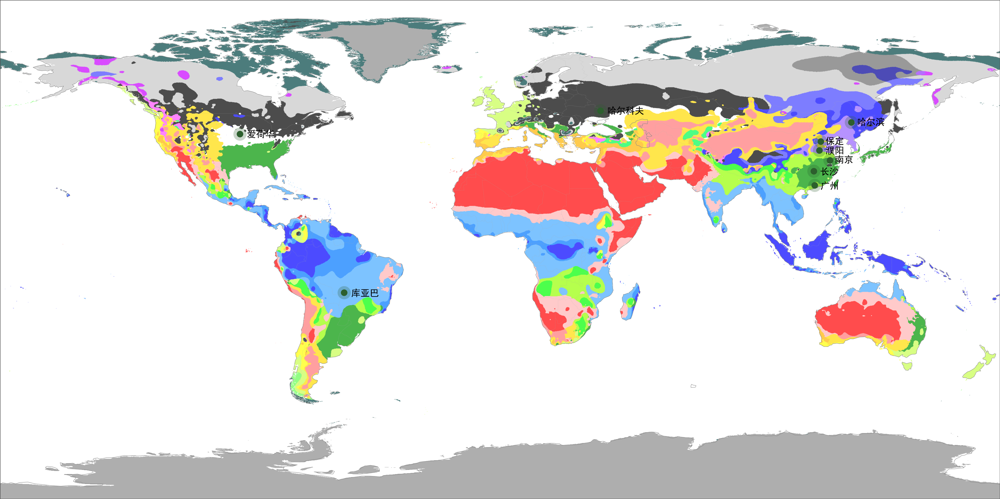

当最优解是不作为
乌克兰黑土区有机质含量高达8%-15%。植格引擎在四年回测中涌现的策略是：不灌溉、不追肥。在这片土地上，任何人为干预都是多余的。
减少无效投入的逆向决策
2018年黑河大豆遭遇低温，传统方案加大水肥投入抢救，最终仍未完熟。植格策略选择了减少投入——代谢慢了，水肥需求自然下降。省下的成本直接转化为净收益。
一年生植物的终极生存策略
灌浆启动后，植格主动将叶片和茎秆中约15%的储存物质以57%的效率输送给籽粒。这不是病害，不是衰老，是植物在繁殖信号触发下自主执行的程序性营养转移。

基于ECMWF全球再分析数据 · 已覆盖九个核心产区 · 跨越六种气候类型 · 跨五个物种